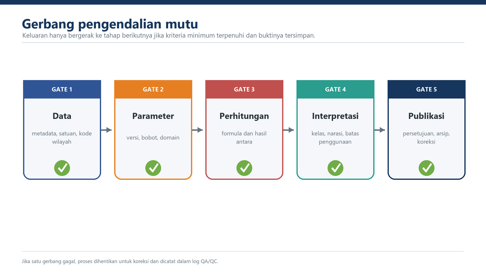

Bab V. Pengendalian Mutu, Penyajian, dan Interpretasi
Draf ilustratif v0.8 — substansi diselaraskan dengan naskah 8 bab
Status: draf kerja, belum normatif · Acuan: laporan 2026, workbook, dan register isu · Versi: 0.8
Tujuan Bab
Menetapkan pemeriksaan mutu serta cara menyajikan dan menafsirkan hasil tanpa melampaui batas metode.

5.1 Pengendalian Mutu dan Validasi
5.1.1 Gate Data Input
Perhitungan hanya dilanjutkan apabila seluruh sumber memiliki pemilik, tahun, versi, tanggal cut-off, satuan, tahun harga, kode wilayah, status validasi, dan checksum atau identitas berkas. Kunci wilayah harus unik dan penggabungan antartabel harus lolos rekonsiliasi cakupan.
5.1.2 Pemeriksaan Satuan dan Saturasi
Distribusi setiap indikator dibandingkan dengan parameter transformasinya. Proporsi nilai yang sangat dekat dengan 0 atau 1 dilaporkan. Saturasi massal memicu pemeriksaan satuan, metode estimasi, dan kalibrasi, bukan sekadar diterima sebagai hasil sah.
5.1.3 Pemeriksaan Status Data
Nol sah, tidak berlaku, tidak tersedia, dan gagal validasi dihitung serta dilaporkan terpisah. Formula tidak boleh mengubah data kosong menjadi nol secara diam-diam atau menutup galat tak terduga dengan IFERROR.
5.1.4 Pemeriksaan Parameter dan Bobot
Versi parameter fuzzy dan tabel bobot dikunci. Setiap bobot per bahaya harus berjumlah 100%. Nilai spread dan midpoint dibandingkan dengan tabel induk. Perubahan parameter memerlukan keputusan, uji sensitivitas, dan catatan versi.
5.1.5 Pemeriksaan Hasil Antara
Indeks komponen, V per bahaya, agregat H, agregat V, RP_raw, RP_idx, IKD, C, RA, dan RR disimpan. Setiap tahap diuji terhadap contoh acuan dan diperiksa rentangnya. Penamaan variabel mengikuti kamus yang telah ditetapkan.
5.1.6 Pemeriksaan Formula
Pola formula harus konsisten antarbaris. Penghitungan ulang independen dilakukan pada seluruh baris atau sampel berisiko tinggi yang ditetapkan. Hasil workbook 2026 telah direplikasi hingga galat pembulatan mesin, tetapi validitas angka tetap bergantung pada validitas input dan urutan metode.
5.1.7 Pemeriksaan Antarwaktu dan Antarwilayah
Perubahan dipisahkan menurut sumber data, metode, parameter, kapasitas, dan wilayah administrasi. Perbandingan hanya dilakukan jika identitas setiap komponen diketahui. Wilayah dengan cakupan bahaya berbeda tidak dibandingkan tanpa penjelasan.
5.1.8 Publikasi dan Koreksi
Publikasi memerlukan persetujuan teknis, data, hukum, dan pejabat berwenang. Koreksi mencatat temuan, dampak, nilai sebelum/sesudah, persetujuan, tanggal rilis ulang, dan daftar keluaran yang terdampak.
5.1.9 Gate Isu Kritis
Metode tidak ditetapkan secara nasional sebelum isu kritis yang memengaruhi formula, satuan, identitas skenario, penggabungan wilayah, klasifikasi, dan status RA diselesaikan atau diberi ketentuan transisi yang sah. ## 5.2 Penyajian dan Interpretasi Hasil
5.2.1 Produk Wajib
Setiap rilis menyajikan sekurang-kurangnya identitas wilayah, versi H, V, IKD, parameter dan metode, RP, C, RA, RR, kelas yang telah disahkan, status validasi, serta catatan perubahan. Hasil antara tersedia untuk audit meskipun tidak seluruhnya ditampilkan dalam publikasi utama.
5.2.2 Pembulatan
Perhitungan dan klasifikasi menggunakan presisi penuh. Pembulatan hanya dilakukan pada tabel, grafik, dan peta. Nilai yang tampak sama setelah pembulatan dapat memiliki kelas berbeda apabila klasifikasi dihitung dari nilai yang belum dibulatkan; keadaan ini dijelaskan pada metadata.
5.2.3 Interpretasi Terpadu
| Pola | Interpretasi | Arah analisis |
|---|---|---|
| RP tinggi, C tinggi, RA lebih rendah | Tekanan struktural tinggi tetapi kapasitas relatif meredam risiko | Pertahankan kapasitas dan kendalikan kerentanan baru |
| RP tinggi, C rendah, RA dan RR tinggi | Tekanan struktural tidak diimbangi kapasitas | Telusuri kapasitas terlemah dan kerentanan dominan |
| RP rendah/sedang, C rendah, RR dapat tinggi | Tekanan belum tinggi tetapi kapasitas tertinggal | Perkuat kapasitas tanpa melebihkan tingkat risiko saat ini |
| RP berubah, C tetap | Perubahan berasal dari bahaya, kerentanan, data, atau metode | Audit versi H/V dan parameter |
| RP tetap, C berubah | Perubahan terutama berasal dari IKD | Telusuri perubahan indikator kapasitas |
Matriks ini merupakan panduan interpretasi, bukan aturan otomatis penetapan program.
5.2.4 Tabel, Grafik, dan Peta
Seluruh produk mencantumkan judul, unit analisis, tahun/versi setiap komponen, sumber data, metode, tanggal cut-off, legenda, kelas, pembulatan, dan status validasi. Peta menggunakan batas administrasi serta proyeksi yang ditetapkan. Warna kelas harus konsisten dan dapat dibedakan oleh pengguna dengan gangguan persepsi warna.
5.2.5 Batas Interpretasi
IRBI adalah instrumen analitis tingkat nasional. Hasil tidak menggantikan kajian risiko rinci, pengetahuan lokal, analisis sektoral, atau proses penetapan kebijakan. RR tidak digunakan sebagai satu-satunya ukuran prioritas dan RA belum disebut sebagai IRBI utama sebelum M-10 diputuskan.